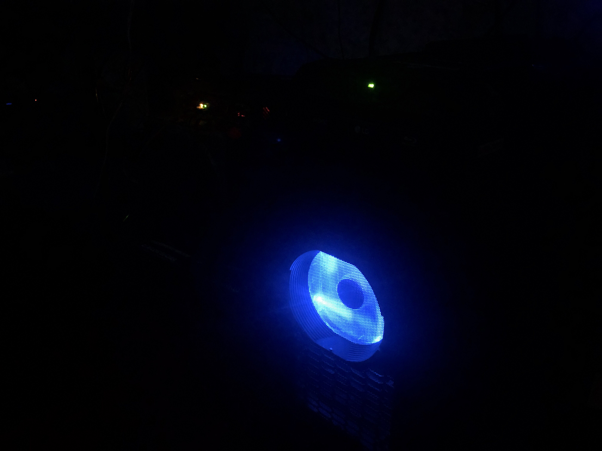

TheDoLab: DESKTOP-TD2015
Built on 7/15/2015 (Upgraded 5/13/2020)
Location: TheDoLab (San Jose, CA)

Usage: Streaming Rig for TheDoVlogs 🎥
Specifications:
CPU: i7-4790K
Motherboard: MSI Z97S SLI Krait Edition
RAM: Patriot 32 GB 1867 Mhz (4x8 GB)
Case: Raidmax Super Aeolus
PSU: Raidmax 500W PSU (Included in Case)
GPU: EVGA GTX 1060 SC 6GB
Drives: Samsung 500 GB SSD + 3 TB WD Green HDD 3.5'
Optical Drive: LG Bluray